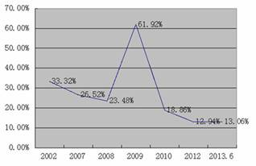

Paper Title :
Local Government Debt Issue: The Case in China
Abstract
Local government debt issue has troubled China’s economy and become a major issue for policy makers. Currently, China is facing downstream in both economy and gross revenue growth. It is acknowledged that preventing local government debt crisis and financial risks is crucial. Relevant suggestions will be proposed at the end of this article by analyzing the status of China's local government debt with reference of international experience.
Author
Ms. Xiaokun Guo
Business School
Central University of Finance and Economics
Beijing, China
Paper Transcript of Paper Titled :
Local Government Debt Issue: The Case in China
Local Government Debt Issue: The Case in China
Ms. Xiaokun Guo
Business School
Central University of Finance and Economics
Beijing, China
a.x.guo@cufe.edu.cn
Abstract— Local government debt issue has troubled China’s economy and become a major issue for policy makers. Currently, China is facing downstream in both economy and gross revenue growth. It is acknowledged that preventing local government debt crisis and financial risks is crucial. Relevant suggestions will be proposed at the end of this article by analyzing the status of China's local government debt with reference of international experience.
Keywords-local government debt; status; impacts; causes; suggestions.
Introduction
On December 30, 2013, the “National Government Debt Auditing Results Report” was published by the China National Audit Office . According to the report, by June 2013, the total amount of national government debt is about ￥ 30.27 trillion, in which the amount of repaying debt is ￥ 20.70 trillion, guarantee liabilities is ￥ 2.93 trillion and salvage obligations is ￥6.65 trillion. The total amount of local government debt is about ￥ 17.89 trillion, in which the repaying debt grows fast. By the end of 2012, the amount is ￥ 9.63 trillion; while by June 2013, the amount is ￥10.89 trillion, with an increasing amount of ￥1.26 trillion and rate of 13.06%. (Table I, Figure1)
TABLE I. STATUS OF NATIONAL GOVERNMENT DEBT
Year |
Government Level |
Repaying Debts |
Contingent Liabilities |
|
Guarantee liabilities |
Salvage obligations |
|||
2012 |
Central |
94376.72 |
2835.71 |
21621.16 |
Local |
96281.87 |
24871.29 |
37705.16 |
|
Total |
190658.59 |
27707.00 |
59326.32 |
|
June 2013 |
Central |
98129.48 |
2600.72 |
23110.84 |
Local |
108859.17 |
26655.77 |
43393.72 |
|
Total |
206988.65 |
29256.49 |
66504.56 |
|
Unit: trillion ￥, Source: China National Audit Office
Figure 1. Local government debt increasing rate

The deepening of China’s reform and opening up and the growing powers of local government lead to rapid expansion of local government debt. From the perspective of government level, borrowers and lenders, the debt amount of finance platforms is about ￥7 trillion ; the amount of bank loans is about ￥10.1 trillion. (Table II, Table III, Table IV)
Table II. LOCAL GOVERNMENT DEBT BY GOVERNMENT LEVEL
Government Level |
Repaying Debts |
Contingent Liabilities |
||||
Amount |
% |
Guarantee liabilities |
Salvage obligations |
|||
Amount |
% |
Amount |
% |
|||
Provincial |
17780.84 |
16.33 |
15627.58 |
58.63 |
18531.33 |
42.71 |
City |
48434.61 |
44.49 |
7424.13 |
27.85 |
17043.70 |
39.28 |
County |
39573.60 |
36.36 |
3488.04 |
13.09 |
7357.54 |
16.96 |
Town |
3070.12 |
2.82 |
116.02 |
0.43 |
461.15 |
1.06 |
Total |
108859.17 |
100 |
26655.77 |
100 |
43393.72 |
100 |
Unit: trillion ￥, Source: China National Audit Office
Table III. LOCAL GOVERNMENT DEBT BY BORROWERS
Borrower |
Repaying Debts |
Contingent Liabilities |
||||
Amount |
% |
Guarantee liabilities |
Salvage obligation |
|||
Amount |
% |
Amount |
% |
|||
Finance Platforms |
40755.54 |
37.44 |
8832.51 |
33.13 |
20116.37 |
46.36 |
Government and organizations |
30913.38 |
28.40 |
9684.20 |
36.33 |
0.00 |
0.00 |
NPO |
17761.87 |
16.32 |
1031.71 |
3.87 |
5157.10 |
11.88 |
State owned/controlling enterprises |
11562.54 |
10.62 |
5754.14 |
21.59 |
14039.26 |
32.35 |
Self-supporting institutions |
3462.91 |
3.18 |
377.92 |
1.42 |
2184.63 |
5.04 |
public service units |
1240.29 |
1.14 |
143.87 |
0.54 |
1896.36 |
4.37 |
Other units |
3162.64 |
2.90 |
831.42 |
3.12 |
0.00 |
0.00 |
Total |
108859.17 |
100 |
26655.77 |
100 |
43393.72 |
100. |
Unit: trillion ￥, Source: China National Audit Office
Table IV. LOCAL GOVERNMENT DEBT BY LENDERS
Lender |
Repaying Debts |
Contingent Liabilities |
||||
Amount |
% |
Guarantee liabilities |
Salvage obligation |
|||
Amount |
% |
Amount |
% |
|||
Bank Loans |
55252.45 |
50.76 |
19085.18 |
71.60 |
26849.76 |
61.87 |
BT |
12146.30 |
11.16 |
465.05 |
1.75 |
2152.16 |
4.96 |
Bonds |
11658.67 |
10.71 |
1673.58 |
6.28 |
5124.66 |
11.81 |
-L-term |
6146.28 |
5.65 |
489.74 |
1.84 |
0.00 |
0.00 |
-Corporate bonds |
4590.09 |
4.22 |
808.62 |
3.03 |
3428.66 |
7.90 |
-M-term notes |
575.44 |
0.53 |
344.82 |
1.29 |
1019.88 |
2.35 |
-S-term bonds |
123.53 |
0.11 |
9.13 |
0.03 |
222.64 |
0.51 |
Payables |
7781.90 |
7.15 |
90.98 |
0.34 |
701.89 |
1.62 |
Trusts |
7620.33 |
7.00 |
2527.33 |
9.48 |
4104.67 |
9.46 |
Private loans |
6679.41 |
6.14 |
552.79 |
2.07 |
1159.39 |
2.67 |
Underwritten/deferred payments |
3269.21 |
3.00 |
12.71 |
0.05 |
476.67 |
1.10 |
Other financing institutions |
2000.29 |
1.84 |
309.93 |
1.16 |
1055.91 |
2.43 |
National bonds, external debts etc. |
1326.21 |
1.22 |
1707.52 |
6.41 |
0.00 |
0.00 |
Financial leasing |
751.17 |
0.69 |
193.05 |
0.72 |
1374.72 |
3.17 |
Raising funds |
373.23 |
0.34 |
37.65 |
0.14 |
393.89 |
0.91 |
Total |
108859.17 |
100 |
26655.77 |
100 |
43393.72 |
100 |
Unit: trillion ￥, Source: China National Audit Office
IMPACTS AND CAUSES
From a macro perspective, it is unlikely that the local government debt issue would lead to debt crisis and financial risks. But it still has major impacts on China's economy by limiting the implementation of fiscal and monetary policies; pushing up interest rate; crowding out business investments and household consumptions; aggravate tax on business and households. Moreover, the local government investment is not conducive to economic growth and multi-level capital market development.
The characteristics of government debt problems in China are: the expansion of government investment promoting economic overheating and rising debts. With the expansion of powers, local governments become financially inadequate, which leads to over liabilities. The capitals of local government debt are mainly from bank loans with finance platforms as major borrowers. The local governments will face greater pressure of debt payments in the next 3 years, and rely highly on land revenue. (Table V, Table VI, Table VII)
Table V. STATUS OF LOCAL GOVERNMENT DEBT PAYMENT
Year |
Repaying Debts |
Contingent Liabilities |
||
Amount |
% |
Guarantee Liabilities |
Salvage obligation |
|
Jul-Dec 2013 |
24949.06 |
22.92 |
2472.69 |
5522.67 |
2014 |
23826.39 |
21.89 |
4373.05 |
7481.69 |
2015 |
18577.91 |
17.06 |
3198.42 |
5994.78 |
2016 |
12608.53 |
11.58 |
2606.26 |
4206.51 |
2017 |
8477.55 |
7.79 |
2298.60 |
3519.02 |
After 2018 |
20419.73 |
18.16 |
11706.75 |
16669.05 |
Total |
108859.17 |
100 |
26655.77 |
43393.72 |
Unit: trillion ￥, Source: China National Audit Office
Table VI. STATUS OF LOCAL GOVERNMENT DEBT INVESTMENT
Investment |
Total Debts |
Repaying Debts |
Contingent Liabilities |
||
Amount |
% |
Contingent liabilities |
Salvage obligation |
||
constructions |
58030.64 |
34.64 |
37935.06 |
5265.29 |
14830.29 |
Land reserve |
18792.06 |
11.21 |
16892.67 |
1078.08 |
821.31 |
Transportations |
40926.47 |
24.43 |
13943.06 |
13188.09 |
13795.32 |
indemnificatory housing |
10947.83 |
6.54 |
6851.71 |
1420.38 |
2675.74 |
Education, Science, culture, public health |
9725.57 |
5.81 |
4878.77 |
752.55 |
4094.25 |
Agriculture, forestry, Public irrigation |
5434.39 |
3.24 |
4085.97 |
580.17 |
768.25 |
Environment protection |
4539.92 |
2.71 |
3218.89 |
434.60 |
886.43 |
Industry and energy resources |
2292.56 |
1.37 |
1227.07 |
805.04 |
260.45 |
Others |
16818.13 |
10.14 |
12155.57 |
2110.29 |
2552.27 |
Total |
167508.47 |
100 |
101188.77 |
25635.39 |
40684.31 |
Unit: trillion ￥, Source: China National Audit Office
Table VII. LOCAL GOVERNMENT INCOME IN 2012
Item |
Amount |
% |
General budgetary revenue |
57680.00 |
42.02 |
transfer payment and Tax return |
45383.47 |
33.06 |
Fund revenue |
34204.00 |
24.92 |
- land revenue |
28517.00 |
20.77 |
Total |
137267.47 |
100 |
Unit: trillion ￥, Source: China China Ministry of Finance
The excessive borrowing of local government has deep political and economic causes. Firstly, the soft budget constraints lead to supervision deficiency; secondly, the current GDP target oriented assessment system for local officials leads to competing for limited public resources and excessive investment impulse; thirdly, the “Four Trillion” project in 2008 created monetary and credit environment for over liabilities; fourthly, the external QE leads to low interest rate and ample liquidity.
SUGGESTIONS
Many Western countries have more experience in local government debt management. For instance, the core of the U.S. local government debt management is the fiscal discipline of hard budget constraints: the federal government does not pay unlimitedly for local government obligations; while private capital investment in local government bond is encouraged in Japan.
Upon the analysis and reference above, suggestions for China’s current local government debt issue could be proposed as follows:
1. In short-term
The local government debt issue in China stems from excessive investment and spending impulse. Currently, a large number of non-performing loans are supposed to be prevented, in order to avoiding debt crisis or even financial risks. In specific: control inflation; regulate local government financing; lower debt growing; clear finance platforms; control real estate growing; encourage direct financing and develop the bond market; encourage the development of the over-the-counter market for growing enterprises (the “New 3rd Board”).
2. In long-term
The local government debt issue in China involves complicated game of benefits with opaque information and the strong externalities of bank loans, therefore, it is difficult to improve significantly in short-term. Long-term suggestions are as below:
1) System supply perspective: Central government is supposed to strengthen the management of local government debt; confirm property rights and powers of local governments at all levels; cut down unlimited assistance gradually; establish hard budget constraints; change the GDP target oriented local officials assessment system and enhance government efficiency.
2) Management perspective: enhance the management and supervision of local government budget; strengthen information disclosure and improve security rating system; establish debt risk warning mechanisms and reserve fund; prevent illegal use of debt capital; improve relevant laws and regulations.
3) Market perspective: revitalize state-owned assets and improve solvency; promote municipal bond pilot issue and local government bond issuance authority; promote interest rate liberalization and reduce the dependence on bank loans; encourage regional financial innovation and private investment in public infrastructures; develop the multi-level capital market.
CONCLUSION
To sum up, the central and local government working together with strict system constraints, developed capital market and competent legal system, is the guarantee to prevent and resolve the fundamental problems of local government debt issue.
References
L. Fan, The Study on Local Government Debt Management in China, 1st ed., vol. 1, China Economic Science Press, 2006.
P. Li, The Management of Local Government Debt: International Comparison and Reference, 1st ed., vol. 1, China Public Finance and Economics Press, 2009.
S. Ba, “How to Resolve the Local Government Debt Problems” in The Southwest Finance, October 2011
Q. Zhou, “Money Entangled with Land” in The Economic Observer, March 2011.
L. An, “The Inspiration in Local Government Debt Management: Reference from the U.S., Japan, Canada, and Australia” in Review of Economic Research, vol. 55, 2012.
K. Jia, “The Local Government Bond Issuance Authority and the Revision of the Budget Act” in Economics, January 2013.
- AUTHOR PROFILE
Ms. Xiaokun Guo is Doctor in Finance from Central University of Finance and Economics; MSc in Finance and Economics from University of Southampton; BSc in Accounting and Management from Shandong University. She currently works as Lecturer and Vice Director of the International Office, Business School, Central University of Finance and Economics.